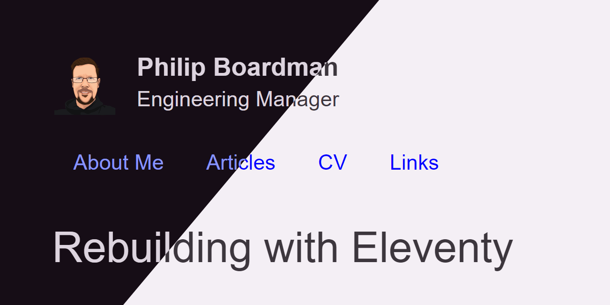

Rebuilding with Eleventy
For this simple site, I've been hosting a minimal markdown to html application to manage this personal site. As my professional software development career has moved on I haven't programmed in PHP for years so it was time for this site to follow this transition and move away from PHP too. While I wanted to rebuild the site code, the underlying data for this site is managed in markdown. So ideally I would like to keep this data in markdown and only replace the html generation and also refresh the styling at the same time.
After some research, I decided to work with Eleventy, which will be able to build a static site from my markdown files and also provide a quick preview mode when working on the files. With a small .eleventy.js config file in the root directory it can even run without installing the package itself, meaning we don't even need a bloated node_modules directory, by using npx.
After reading the documentation and watching a short ten minute tutorial, my final config file looks like this:
module.exports = function (cfg) {
cfg.addWatchTarget("./src/**/*.css");
cfg.addPassthroughCopy("src/**/*.{css,jpg,png,gif}");
return {
dir: {
input: "src",
output: "build"
}
}
};This configuration sets input and output directories - source files are in src and the finished website is output at build, as well as identifying that we want the styles and images *.{css,jpg,png,gif} copied to the website too.
Previewing the website is achieved by running eleventy with the --serve parameter, which runs a webserver hosting the output directory and monitors the input files for changes, which will then rebuild the website and refresh the browser. Both of these can be added to package.json too.
npx @11ty/eleventy --serveThe website files can also be generated without reloading and previewing with:
npx @11ty/eleventyOnce the website is ready to be released, the static files can be copied from the output directory to a web server and the hard part is done.
After this, there is opportunity to explore integrating the build and publish steps into a CI/CD pipeline to be triggered by changes to a code repository, when adding or editing an article or other page.
This turned out to be extremely simple with Netlify's Wizard for GitHub integration and deployment for static sites. It detected my use of Eleventy and the only adjustment required for my setup was to specify that I'd changed the output directory to /build.
Formatting dates
After the initial rebuild I have explored some additional configuration options to improve the experiences of managing and reading the articles. Firstly was adding a custom formatting filter for dates to truncate the time from the ISO date format.
cfg.addFilter('postDate', (dateObj) => {
var isoDate = dateObj.toISOString()
return isoDate.substring(0, 10);
})With this filter added to the configuration, displaying the dates in my preferred YYYY-mm-dd format can be achieved by applying the filter within the liquid template
Published on: {{ page.date | postDate }}